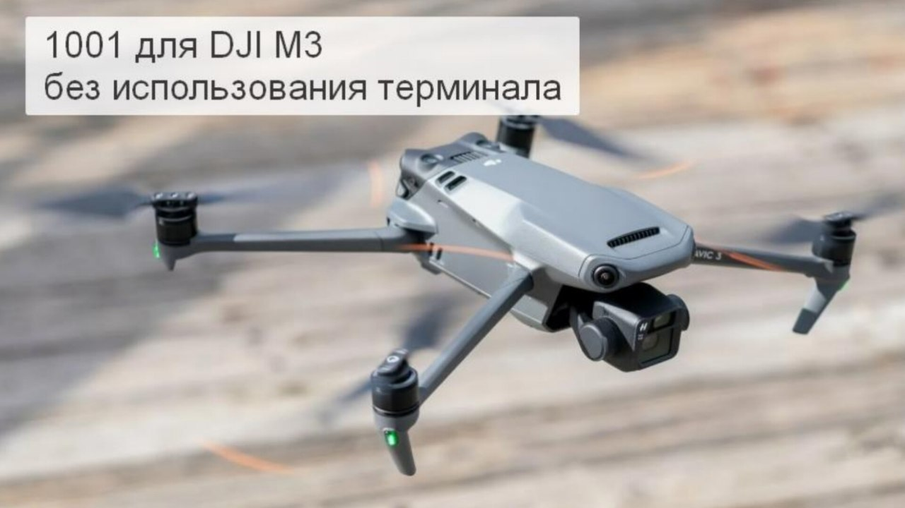

РЕЕСТР ПРОШИВОК ДЛЯ КВАДРОКОПТЕРОВ DJI
ℹ️ Какой дрон, на что и с помощью какого инструмента можно перепрошить.
* обновляется регулярно.
Добавлена прошивка для DJI MATRICE 4Т/4Е.
Прошивка, в реестре:
- "1001" от Русских Хакеров (
)
ℹ️ Если 1001 прошивка через терминал недоступна
- альтернатива тут -
- "Drone Unbind" от РХ - для отвязки дрона от пульта
- "
(.apk на Андроид)
-
(.exe для Windows)
- "DRONHACKS" - запасной вариант (если не накатывается 1001).
ℹ️ К
акие есть еще варианты прошивки:
📝
Непроверенная внешняя ссылка
DronHacks
DronHacks
(по VPN)
1. Тонкие настройки:
- Отключение огней
- Отключение автопосадки при низком уровне заряда
- Посадка на руку
- Изменение характеристик режима СПОРТ и другие
2. Лицензия:
- Отключение бесполетных зон
- Включение FCC
- Отключение ограничения по высоте
📝
(.exe для Windows) - отключение DroneID на Мавик 2 и Мавик 3 (с официальной прошивкой до 1000).
Работает на Windows.
📝
(.apk на Андроид) - отключение DroneID, отключение огней на Мавик 3 с официальной прошивкой до 700.
Работает на Android.
Коллеги, если Вам есть что дополнить, пишите в личку или в группе СВОи_FPV_выZOV.
#Оператору_квадрокоптеров_DJI_AUTEL_FIMI
#DJI
#ПРОШИВКА
#Техник_бпла
#ремонт_DJI
#DJI
Это вложение из поста t.me/platforma_fpv/2/1319

Прошивка дронов DJI Mavic 3 на 1001ую прошивку (v34/v36) с помощью программы "1001_v36_M3*".
БЕЗ ИСПОЛЬЗОВАНИЯ ТЕРМИНАЛА.
* Так как эта трофейная программа, по сути, копия прошивки 1001й (версии 36), то мы условно всегда будем называть её «1001_v36_M3».
Только для DJI Mavic 3
- скачать все файлы в одну папку;
- файл с расширением .zip распаковать с помощью любого архиватора (например 7zip или WinRar);
- продолжить работу с папкой "1001_v36_M3", по
.
⚠️ Перед прошивкой на компьютер заранее необходимо установить дополнительные программы и драйвера.
Установку программ и драйверов необходимо осуществлять под учетной записью
Администратора компьютера
✔️ По умолчанию мы рекомендуем устанавливать
36-ую версию
, т.к. в ней добавлена Команда
"lost"
.
📝 Посмотреть все альтернативы 1001й, если терминал с 1001й недоступен (
добавим в ближайшее время
при поддержке
#ПРОШИВКА
#DJI
#техник_бла
Это вложение из поста t.me/platforma_fpv/2/1685
1001 от Русских Хакеров, версия 53
ℹ️ Актуальные инструкции для операторов квадрокоптеров DJI:
- Mavic 3, 3 Pro, 3 Classic;
- Mavic 3T, Mavic 3E и Matrice 30(T), Matrice 300
➡️ Обновление 1001 прошивки, версия 53:
Закончены работы по переносу прошивки «1001» на дрон DJI Matrice 300 и теперь эта модель также прошивается через специальные ноутбуки на «1001».
Теперь актуальный список моделей дронов DJI, которые можно прошить на «1001,» выглядит так:
- Mavic 3
- Mavic 3 Classic
- Mavic 3 Pro
- Mavic 3 Multispectral
- Mavic 3 Enterprise
- Mavic 3 Thermal
- Matrice 30(T)
- Matrice 300
- Добавлена команда «
bad_battery,
», позволяющая запускать двигатели дрона с любой АКБ (даже при отсутствии штатной АКБ в дроне), игнорируя ошибки батареи. Эта команда должна помочь в создании и использовании АКБ для долгих полетов. Важно отметить: при использовании неисправной или неподходящей батареи (вместе с этой командой) дрон может упасть;
- Добавлена команда «
wind_atti,
», благодаря которой при достижении «красного» (критического) значения ветра сразу же произойдет принудительное переключение дрона в режим ATTI на 8 секунд, позволяя предотвратить потерю высоты;
- Добавлена команда «
fcc_default,
» к существующим командам «fcc_on,» и «fcc_off,», позволяющая полностью отключить вмешательство в работу радиотракта дрона со стороны «1001,» прошивки;
- Модифицирована команда «
tof_off,
» — теперь она не только игнорирует показания нижнего (для серии Matrice - всех) сонара, но и выключает его ИК-подсветку.
Новые функции терминала
: установка и активация альтернативных отечественных полетных приложений на пульты.
В специальных ноутбуках для прошивки «1001,» (терминалах) появилась новая возможность — установка на пульты с одновременной активацией альтернативных отечественных полетных приложений, которые предназначены для помощи оператору в корректировке, разведке и решении других задач: «Трепет» и «Глаз 3».
Эта возможность позволит значительно упростить подготовку дронов к решению задач в рамках СВО.
❗️Ввод команд на 1001 прошивке осуществлять по инструкции в поле "
Название дрона
", в конце Команды
обязательно должна быть запятая
Например, нужно отключить огни.
1. В названии дрона вводим команду
leds_off,
(не забываем про запятую в конце).
2. Нажимаем на галочку.
3. Нажимаем «Сохранить»
ℹ️ Какие дроны прошиваются на 1001 - список в
, там же варианты прошивок для случаев, когда "1001" недоступна.
❔ Где прошить на 1001
.
⚠️ Если 1001 прошивка через терминал недоступна
- альтернатива тут -
#инструкции
#Оператору_квадрокоптеров_DJI_AUTEL_FIMI
#настройка_бпла
#техник_бпла
Веб-страница создана автоматически на основе поста пользователя ПЛАТФОРМА_FPV